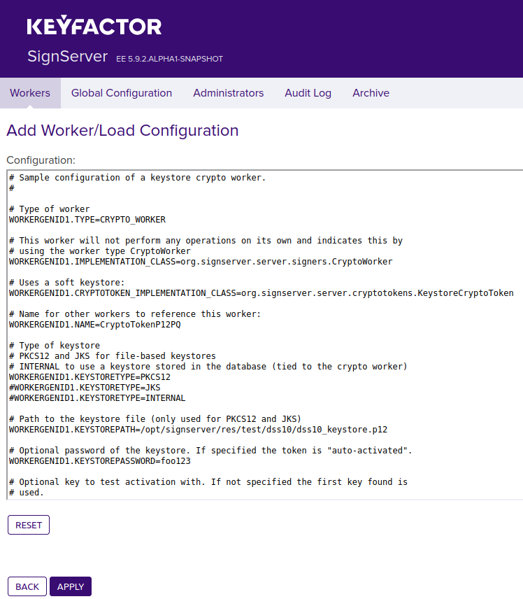
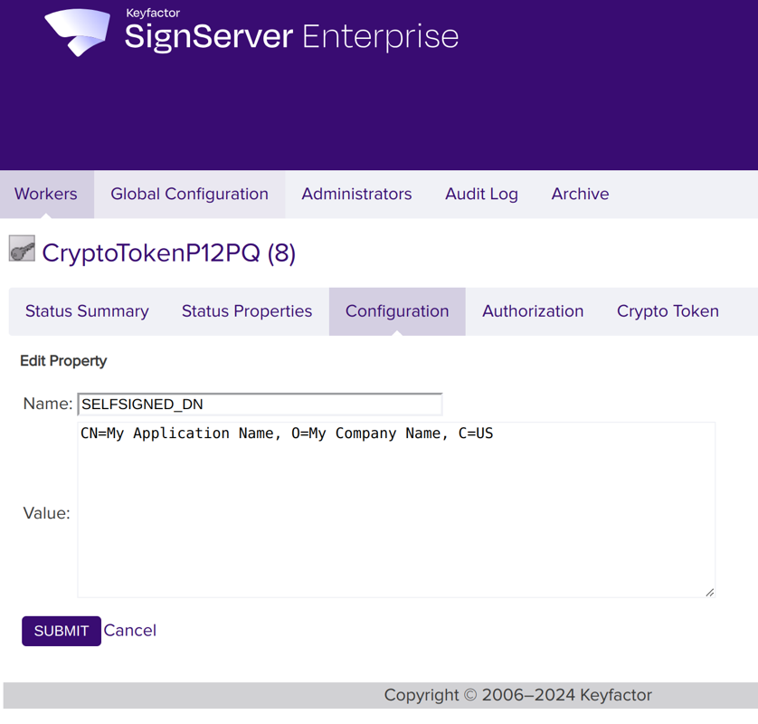
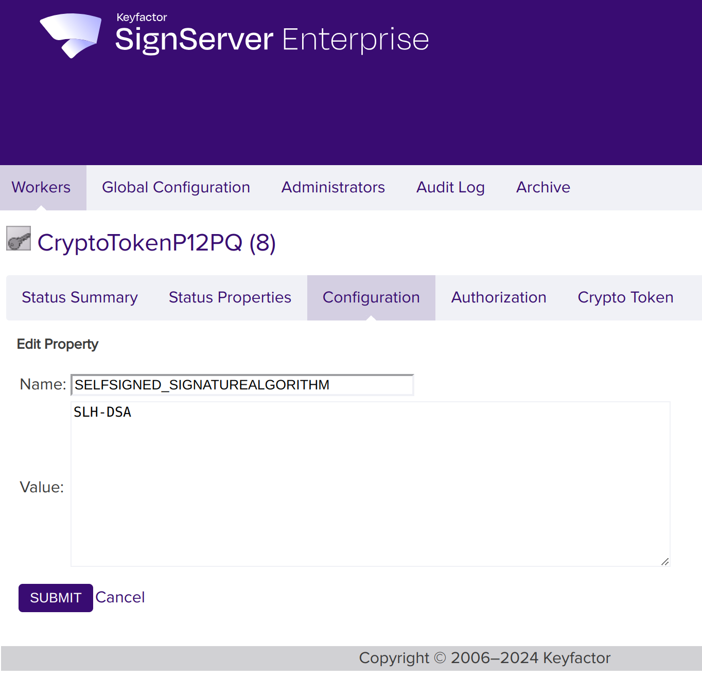
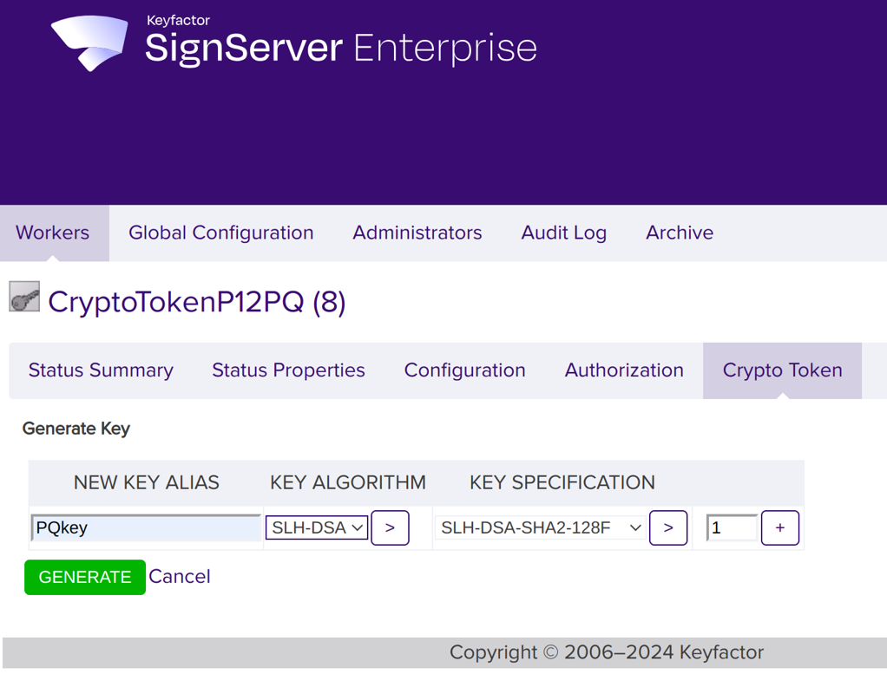
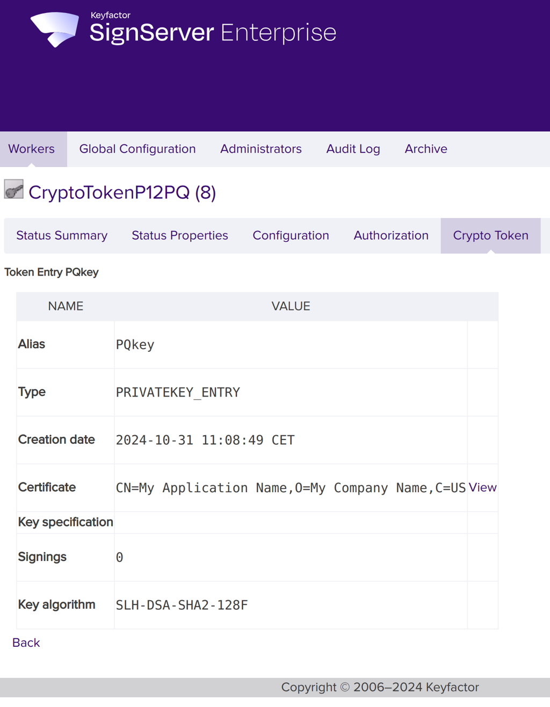
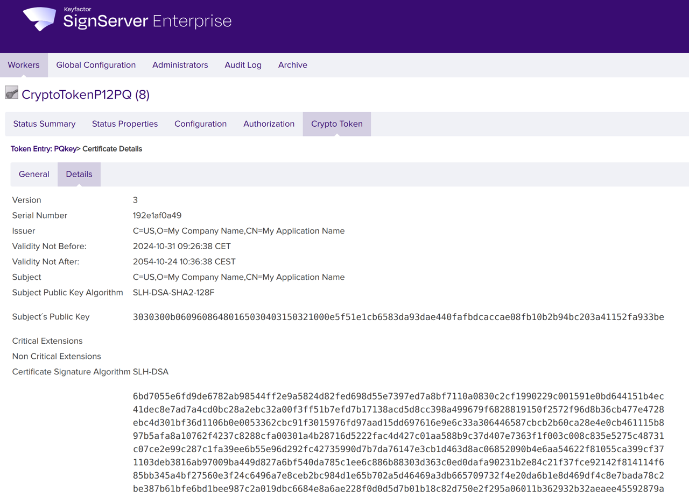
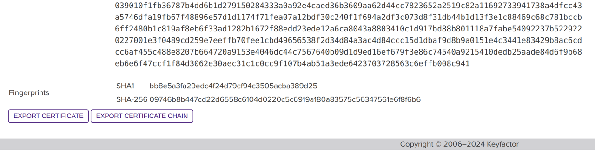
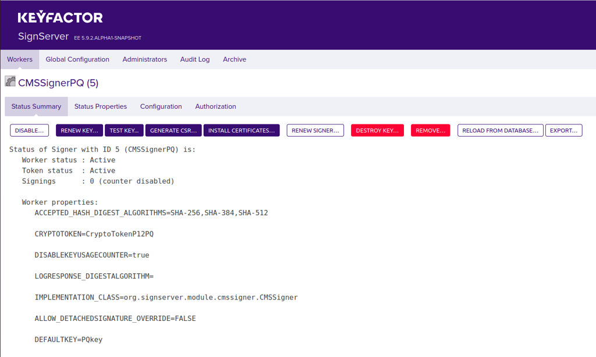
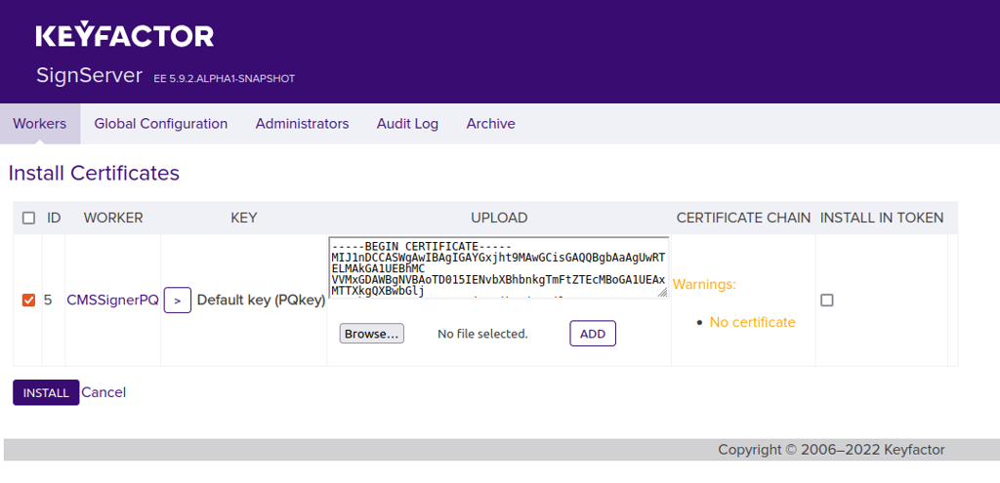
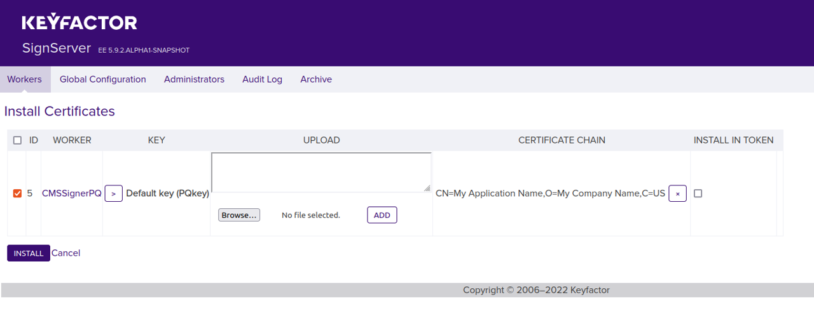

Code Signing with NIST Post-Quantum Algorithms
enterprise
With NIST’s standardization of post-quantum cryptographic algorithms, SignServer supports the NIST-approved ML-DSA (FIPS 204) and SLH-DSA (FIPS 205) algorithms.
This guide demonstrates code signing based on SignServer using the NIST quantum-safe SLH-DSA or ML-DSA algorithms through Bouncy Castle and allows you to try out creating quantum-safe keys and signatures.
The use case is to apply a quantum-safe algorithm for code signing in an IoT application.
Prerequisites
Access to Admin Web
For installation instructions, see SignServer Installation.
Part 1 - Signing
Step 1: Set up a Crypto Token
SignServer Workers use a Crypto Token to talk to the software keystore and you therefore need to set up a Worker to hold this Crypto Token.
To set up a Crypto Token using a soft keystore, do the following:
Open Admin Web.
Go to the Workers page, and click Add.
Click From Template, select keystore-crypto.properties in the list, and click Next.
In the configuration text view, specify the following:
NAME: Specify a name for the Worker, for example, CryptoTokenP12PQ.
KEYSTOREPATH: Verify the full path to the keystore file dss10_keystore.p12 (Default: /opt/signserver/res/test/dss10/dss10_keystore.p12).
KEYSTOREPASSWORD: Uncomment the password for the keystore.

Click Apply.
Set the following Crypto Token properties to automatically generate a self-signed post-quantum certificate with the specified name and algorithm when generating a key (see Common Worker Configuration):
SELFSIGNED_DN: Set this to the name that you would like to have in the certificate. Typically, the following format is used: "CN=My Application Name, O=My Company Name, C=US".

SELFSIGNED_SIGNATUREALGORITHM: Set this to SLH-DSA.

Click Submit.
Remember the name of the Crypto Worker (CryptoTokenP12PQ) as you will need it in later steps when setting up the CMS Signer.
Step 2: Generate Key-pair
SLH-DSA:
To generate a new SLH-DSA key to use with the signer, follow the steps below:
Select the CryptoTokenP12PQ Worker and click the Crypto Token tab.
Click Generate Key to generate a new key pair and specify the following:
Specify a New Key Alias for the new key, for example, PQkey.
For Key Algorithm, select SLH-DSA.
For Key Specification, use any of the SLH-DSA spec, such as SLH-DSA-SHA2-128F.

Click Generate to generate the key pair.
ML-DSA:
To generate a new ML-DSA key to use with the signer, follow the steps below:
Select the CryptoTokenP12PQ Worker and click the Crypto Token tab.
Click Generate Key to generate a new key pair and specify the following:
Specify a New Key Alias for the new key, for example, PQkey.
For Key Algorithm, select ML-DSA.
For Key Specification, use any of the ML-DSA spec, such as ML-DSA-44.
Step 3: Export Certificate
To verify the SLH-DSA or ML-DSA certificate and then export it, do the following:
To find the certificate and verify that it is a SLH-DSA or ML-DSA certificate:
Select the CryptoTokenP12PQ Worker and go to the Crypto Token tab.
Click on the newly generated post-quantum key (for example named PQKey).
Click View on the Certificate row.

Click the Details tab.

Verify that the Certificate Signature Algorithm is the expected algorithm.
To export the certificate:
On the Details tab, scroll down to the end of the page and click Export Certificate Chain to download the certificate chain as a PEM file.

Step 4: Add CMS Signer
Do the following to add a CMS Signer for detached signatures using the created Crypto Token:
Select the Workers page, and click Add to add a new Worker.
Choose the method From Template.
Select cms_signer.properties in the Load from Template list and click Next.
Change the sample configuration properties according to the following:
NAME=CMSSignerPQ
CRYPTOTOKEN=CryptoTokenP12PQ
DETACHEDSIGNATURE=true
SIGNATUREALGORITHM=SLH-DSA or ML-DSA
DEFAULTKEY = specify the name of the new key you just generated (for example PQkey)
Click Apply to load the configuration and list the Worker in the All Workers list.
For a list of all CMS signer-specific properties, see CMS Signer.
Step 5: Import Certificate
As the certificate used is self-signed, it is not necessary to request a certificate from a Certification Authority (CA). Instead, use the certificate exported from our Crypto Token in Step 3 - Export Certificate.
On the Workers page, click the CMSSignerPQ Worker and then click Install Certificates.

Click Browse to select the downloaded certificate chain file (exported in Step 3 - Export Certificate).

Click Add and verify that you see the certificate DN in the Certificate Chain column.

Click Install.
The worker is now listed with the status Active. Confirm that the certificate has the expected name, and so on.
Step 6: Sign Firmware File
The following example shows how to sign your firmware file and get back the detached signature using Client Web. You can test signing using any of the SignServer client interfaces.
Click Client Web.
Under File Upload, specify the Worker name used, in this example CMSSignerPQ.
Select a file to sign (for example, content.bin).
Click Submit and store the resulting signed file (for example content.bin.p7s).
Part 2 - Verification
The following steps describe how to set up a trust store and then verify the signature using a provided jar file and Java verifier application.
Step 1: Set up Trust Store
To set up a trust store, do the following:
Create a folder called
trust-dir.Copy the self-signed certificate exported from the SignServer Crypto Token into this folder.
Change the file extension from .pem to .crt.
Step 2: Verify Signature
The following describes how to verify the signature using a PostQuantum Verifier JAR file available on Keyfactor GitHub.
You can optionally download the PostQuantum Verifier code from Keyfactor GitHub and build it to get the JAR file and make your own customizations.
To verify the signature using the provided file, do the following:
Download the PostQuantum-Verifier-jar-with-dependencies.jar file from Keyfactor GitHub.
Use the signature file (for example, content.bin.p7s) and the content file (for example, content.bin), and the path to the trust store folder (created in Step 1 - Set up Trust Store) as input parameters to the verifier.
Use the following syntax to run the VerifierApp:
java -jar <path to PostQuantum-Verifier jar file> cms <path to the p7s signature file> <path to the content file which is signed> <path to the trust store folder>ex : $ java -jar PostQuantum-Verifier-jar-with-dependencies.jar cms content.bin.p7s content.bin trust-dir/To verify the verification result, you can for example check the following:
The output contains
“Verified”which means the signature is verified.The output contains alg: 2.16.840.1.101.3.4.3.17 which is the OID for ML-DSA-44.
The following displays an example verification result:
0[main] DEBUG org.signserver.pq.verifier.VerifierApp - VerifierAppAdded CryptoTokenP12PQ-PQkey-certificate-181b18e1b7d.crt as trust anchorVerifying signer CN=My Application Name, O=My Company Name, C=USalg:2.16.840.1.101.3.4.3.17algName: ML-DSA-44VerifiedValid trusted signature using1.3.6.1.4.1.22554.2.5from CN=My Application Name, O=My Company Name, C=US
You have now completed all the steps and tried out creating post-quantum keys and signatures.
For more information about Bouncy Castle, refer to bouncycastle.org.